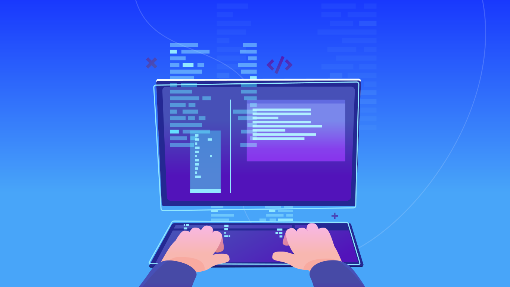

.png)
Faculdades
- USP
- UNICAMP
- FIAP
- PUC
Cursos
- Ciência da Computação
- Sistemas de Informação
- Análise e Desenvolvimento de Sistemas
A duração média dos cursos é entre 2 e 4 anos.
Estrutura dos Cursos
Os cursos de tecnologia combinam teoria e prática. Nos primeiros semestres, o foco está em fundamentos como lógica de programação, matemática aplicada e arquitetura de computadores. Depois, os alunos estudam disciplinas específicas como engenharia de software, redes de computadores e segurança da informação.

Modalidades de Ensino
- Presencial: aulas em sala, com contato direto com professores e colegas.
- EAD: ensino a distância, com flexibilidade de horários.
- Híbrido: mistura de aulas presenciais e online.
Disciplinas Comuns
- Programação orientada a objetos
- Banco de dados
- Desenvolvimento web
- Inteligência Artificial
Duração e Estágios
A duração média dos cursos varia entre 2 e 4 anos. Durante esse período, os alunos podem realizar estágios em empresas de tecnologia, aplicando na prática os conhecimentos adquiridos.
Oportunidades Após a Formação
Ao concluir o curso, o profissional pode atuar em diversas áreas:
- Desenvolvimento de software
- Administração de sistemas
- Segurança cibernética
- Ciência de dados